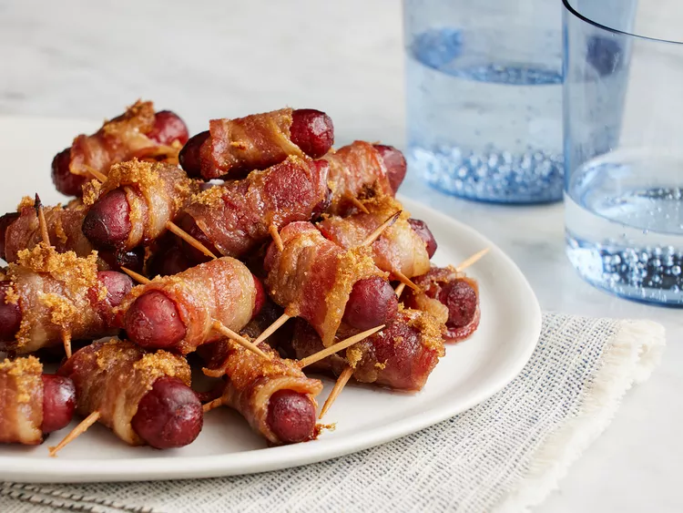

Bacon Wrapped Smokies

Description
Bacon-wrapped smokies will liven up any party, from big tailgates to cozy family get-togethers. This recipe for bacon-wrapped smokies couldn't be easier to make with just a few ingredients!
Ingredients
- 1 package cocktail wieners
- 1 pound bacon, with slices cut into thirds
- 3/4C brown sugar
- toothpicks
Steps
- Preheat the oven to 325 degrees F (165 degrees C). Line a large, rimmed baking sheet with parchment paper or aluminum foil.
- Wrap each cocktail wiener with a piece of bacon; secure with a toothpick. Place bacon-wrapped wieners on the prepared baking sheet and evenly sprinkle brown sugar over the tops.
- Bake in the preheated oven until bacon is crisp and sugar is bubbly, about 40 minutes.
- Serve immediately, or place in a slow cooker set on Low to keep warm.